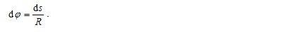
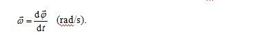
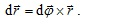
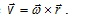
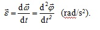
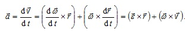
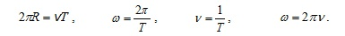
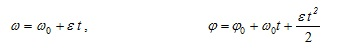

Кинематика на въртеливо движение на материална точка
-
ТЕОРИЯ
Движението по окръжност е частен случай на криволинейното движение. То се наблюдава във всеки механизъм, който съдържа въртящи се части. Нека материална точка се движи по окръжност с радиус R и център т.О, като за интервал от време dt описва дъгата с дължина ds. Основна кинематична характеристика на движението по окръжност е ъгълът на завъртане , който съответства на дъгата АВ. Мeрната единица за равнинен ъгъл е радиан (rad). За малки ъгли на завъртане е в сила равенството

-
Ъгловата скорост на въртене се дефинира като отношение между елементарния ъгъл на завъртане и времето dt за неговото описване

Векторите на елементарния ъгъл , радиус-векторът на материалната точка и преместването , са свързани чрез равенството

Връзката между моментните стойности на линейната и ъгловата скорости е

Величината ъглово ускорение характеризира бързината на изменение на ъгловата скорост

При ускорително движение по окръжност посоката на съвпада с тази на , а при закъснително е противоположна.
Между линейното и ъгловото ускорения съществува връзка, подобна на тази между линейната и ъгловата скорости. От уравнението
При равномерно движение по окръжност . За описание на този частен случай на движение по окръжност се въвеждат допълнителните величини – период Т и честота . Периодът е времето за една пълна обиколка по кръговата траектория. От определението за период следват кинематичните зависимости

При равнопроменливо движение по окръжност законите за скоростта и движението се записват по начин, аналогичен на този при праволинейното движение. В скаларен вид те са:

-
-
-
© ROGACHEV